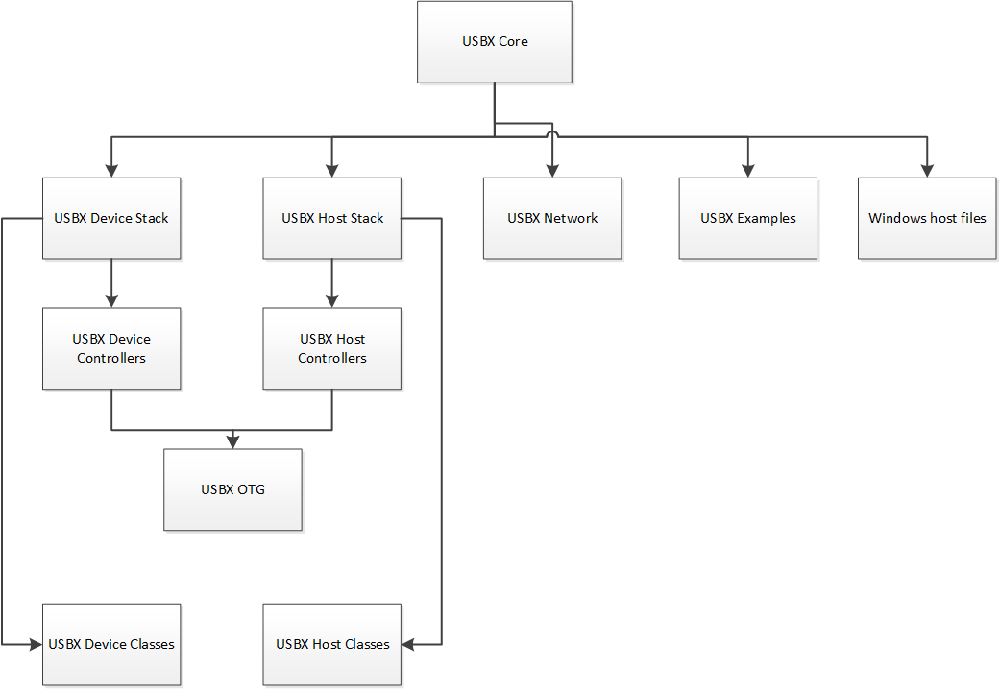

Chapter 2 - USBX Device Stack Installation
Host Considerations
Computer Type
Embedded development is usually performed on Windows PC or Unix host computers. After the application is compiled, linked, and located on the host, it is downloaded to the target hardware for execution.
Download Interfaces
Usually the target download is done over an RS-232 serial interface, although parallel interfaces, USB, and Ethernet are becoming more popular. See the development tool documentation for available options.
Debugging Tools
Debugging is done typically over the same link as the program image download. A variety of debuggers exist, ranging from small monitor programs running on the target through Background Debug Monitor (BDM) and In-Circuit Emulator (ICE) tools. The ICE tool provides the most robust debugging of actual target hardware.
Required Hard Disk Space
The source code for USBX is delivered in ASCII format and requires approximately 500 KBytes of space on the host computer’s hard disk.
Target Considerations
USBX requires between 24 KBytes and 64 KBytes of Read Only Memory (ROM) on the target in host mode. The amount of memory required is dependent on the type of controller used and the USB classes linked to USBX. Another 32 KBytes of the target’s Random Access Memory (RAM) are required for USBX global data structures and memory pool. This memory pool can also be adjusted depending on the expected number of devices on the USB and the type of USB controller. The USBX device side requires roughly 10-12 K of ROM depending on the type of device controller. The RAM memory usage depends on the type of class emulated by the device.
USBX also relies on ThreadX semaphores, mutexes, and threads for multiple thread protection, and I/O suspension and periodic processing for monitoring the USB bus topology.
Product Distribution
USBX can be obtained from our public source code repository at https://github.com/eclipse-threadx/usbx/.
The following is a list of several important files in the repository.
-
ux_api.h: This C header file contains all system equates, data structures, and service prototypes.
-
ux_port.h: This C header file contains all development-tool-specific data definitions and structures.
-
ux.lib: This is the binary version of the USBX C library. It is distributed with the standard package.
-
demo_usbx.c: The C file containing a simple USBX demo
All filenames are in lower-case. This naming convention makes it easier to convert the commands to Unix development platforms.
USBX Installation
USBX is installed by cloning the GitHub repository to your local machine. The following is typical syntax for creating a clone of the USBX repository on your PC:
git clone https://github.com/eclipse-threadx/usbxAlternatively you can download a copy of the repository using the download button on the GitHub main page.
You will also find instructions for building the USBX library on the front page of the online repository.
The following general instructions apply to virtually any installation:
-
Use the same directory in which you previously installed ThreadX on the host hard drive. All USBX names are unique and will not interfere with the previous USBX installation.
-
Add a call to ux_system_initialize at or near the beginning of tx_application_define. This is where the USBX resources are initialized.
-
Add a call to ux_device_stack_initialize.
-
Add one or more calls to initialize the required USBX classes (either host and/or devices classes)
-
Add one or more calls to initialize the device controller available in the system.
-
It may be required to modify the tx_low_level_initialize.c file to add low-level hardware initialization and interrupt vector routing. This is specific to the hardware platform and will not be discussed here.
-
Compile application source code and link with the USBX and ThreadX run time libraries (FileX and/or NetX Duo may also be required if the USB storage class and/or USB network classes are to be compiled in), ux.a (or ux.lib) and tx.a (or tx.lib). The resulting can be downloaded to the target and executed!
Configuration Options
There are several configuration options for building the USBX library. All options are located in the ux_user.h.
The list below details each configuration option.
| Configuration Option | Description |
|---|---|
UX_PERIODIC_RATE |
This value represents how many ticks per seconds for a specific hardware platform. The default is 1000 indicating 1 tick per millisecond. |
UX_THREAD_STACK_SIZE |
This value is the size of the stack in bytes for the USBX threads. It can be typically 1024 bytes or 2048 bytes depending on the processor used and the host controller. |
UX_THREAD_PRIORITY_ENUM |
This is the ThreadX priority value for the USBX enumeration threads that monitors the bus topology. |
UX_THREAD_PRIORITY_CLASS |
This is the ThreadX priority value for the standard USBX threads. |
UX_THREAD_PRIORITY_KEYBOARD |
This is the ThreadX priority value for the USBX HID keyboard class. |
UX_THREAD_PRIORITY_DCD |
This is the ThreadX priority value for the device controller thread. |
UX_NO_TIME_SLICE |
This value actually defines the time slice that will be used for threads. For example, if defined to 0, the ThreadX target port does not use time slices. |
UX_MAX_SLAVE_CLASS_DRIVER |
This is the maximum number of USBX classes that can be registered via ux_device_stack_class_register. |
UX_MAX_SLAVE_LUN |
This value represents the current number of SCSI logical units represented in the device storage class driver. |
UX_SLAVE_CLASS_STORAGE_INCLUDE_MMC |
If defined, the storage class will handle Multi-Media Commands (MMC) that is, DVD-ROM. |
UX_DEVICE_CLASS_CDC_ECM_NX_PKPOOL_ENTRIES |
This value represents the number of NetX packets in the CDC-ECM class' packet pool. The default is 16. |
UX_SLAVE_REQUEST_CONTROL_MAX_LENGTH |
This value represents the maximum number of bytes received on a control endpoint in the device stack. The default is 256 bytes but can be reduced in memory constraint environments. |
UX_DEVICE_CLASS_HID_EVENT_BUFFER_LENGTH |
This value represents the maximum length in bytes of a HID report. |
UX_DEVICE_CLASS_HID_MAX_EVENTS_QUEUE |
This value represents the maximum number of HID reports that can be queued at once. |
UX_SLAVE_REQUEST_DATA_MAX_LENGTH |
This value represents the maximum number of bytes received on a bulk endpoint in the device stack. The default is 4096 bytes but can be reduced in memory constraint environments. |
UX_DEVICE_BIDIRECTIONAL_ENDPOINT_SUPPORT |
If defined, the device side enables bi-directional-endpoints support, e.g., endpoints addressed 0x01 and 0x81. Otherwise (the default case), endpoint number must be unique in same configuration. Note the feature must be used with compatible DCD and peripheral. |
Source Code Tree
The USBX files are provided in several directories.

In order to make the files recognizable by their names, the following convention has been adopted:
| File Suffix Name | File description |
|---|---|
ux_host_stack |
usbx host stack core files |
ux_host_class |
usbx host stack classes files |
ux_hcd |
usbx host stack controller driver files |
ux_device_stack |
usbx device stack core files |
ux_device_class |
usbx device stack classes files |
ux_dcd |
usbx device stack controller driver files |
ux_otg |
usbx otg controller driver related files |
ux_pictbridge |
usbx pictbridge files |
ux_utility |
usbx utility functions |
demo_usbx |
demonstration files for USBX |
Initialization of USBX resources
USBX has its own memory manager. The memory needs to be allocated to USBX before the host or device side of USBX is initialized. USBX memory manager can accommodate systems where memory can be cached.
The following function initializes USBX memory resources with 128 K of regular memory and no separate pool for cache safe memory:
/* Initialize USBX Memory */
ux_system_initialize(memory_pointer,(128*1024),UX_NULL,0);The prototype for the ux_system_initialize is as follows:
UINT ux_system_initialize(VOID *regular_memory_pool_start,
ULONG regular_memory_size,
VOID *cache_safe_memory_pool_start,
ULONG cache_safe_memory_size);Input parameters:
| Parameter | Description |
|---|---|
VOID *regular_memory_pool_start |
Beginning of the regular memory pool |
ULONG regular_memory_size |
Size of the regular memory pool |
VOID *cache_safe_memory_pool_start |
Beginning of the cache safe memory pool |
ULONG cache_safe_memory_size |
Size of the cache safe memory pool |
Not all systems require the definition of cache safe memory. In such a system, the values passed during the initialization for the memory pointer will be set to UX_NULL and the size of the pool to 0. USBX will then use the regular memory pool in lieu of the cache safe pool.
In a system where the regular memory is not cache safe and a controller requires to perform DMA memory it is necessary to define a memory pool in a cache safe zone.
Uninitialization of USBX resources
USBX can be terminated by releasing its resources. Prior to terminating usbx, all classes and controller resources need to be terminated properly. The following function uninitializes USBX memory resources:
/* Unitialize USBX Resources */
ux_system_uninitialize();The prototype for the ux_system_initialize is as follows:
UINT ux_system_uninitialize(VOID);Definition of USB Device Controller
Only one USB device controller can be defined at any time to operate in device mode. The application initialization file should contain this definition. The following line performs the definition of a generic usb controller:
ux_dcd_controller_initialize(0x7BB00000, 0, 0xB7A00000);The USB device initialization has the following prototype:
UINT ux_dcd_controller_initialize(ULONG dcd_io,
ULONG dcd_irq, ULONG dcd_vbus_address);with the following parameters:
| Parameter | Description |
|---|---|
ULONG dcd_io |
Address of the controller IO |
ULONG dcd_irq |
Interrupt used by the controller |
ULONG dcd_vbus_address |
Address of the VBUS GPIO |
The following example is the initialization of USBX in device mode with the storage device class and a generic controller:
/* Initialize USBX Memory */
ux_system_initialize(memory_pointer,(128*1024), 0, 0);
/* The code below is required for installing the device portion of USBX */
status = ux_device_stack_initialize(&device_framework_high_speed,
DEVICE_FRAMEWORK_LENGTH_HIGH_SPEED, &device_framework_full_speed,
DEVICE_FRAMEWORK_LENGTH_FULL_SPEED, &string_framework,
STRING_FRAMEWORK_LENGTH, &language_id_framework,
LANGUAGE_ID_FRAMEWORK_LENGTH, UX_NULL);
/* If status equals UX_SUCCESS, installation was successful. */
/* Store the number of LUN in this device storage instance: single LUN. */
storage_parameter.ux_slave_class_storage_parameter_number_lun = 1;
/* Initialize the storage class parameters for reading/writing to the Flash Disk. */
storage_parameter.ux_slave_class_storage_parameter_lun[0].ux_slave_class_storage_media_last_lba = 0x1e6bfe;
storage_parameter.ux_slave_class_storage_parameter_lun[0].ux_slave_class_storage_media_block_length = 512;
storage_parameter.ux_slave_class_storage_parameter_lun[0].ux_slave_class_storage_media_type = 0;
storage_parameter.ux_slave_class_storage_parameter_lun[0].ux_slave_class_storage_media_removable_flag = 0x80;
storage_parameter.ux_slave_class_storage_parameter_lun[0].ux_slave_class_storage_media_read = tx_demo_thread_flash_media_read;
storage_parameter.ux_slave_class_storage_parameter_lun[0].ux_slave_class_storage_media_write = tx_demo_thread_flash_media_write;
storage_parameter.ux_slave_class_storage_parameter_lun[0].ux_slave_class_storage_media_status = tx_demo_thread_flash_media_status;
/* Initialize the device storage class. The class is connected with interface 0 */
status = ux_device_stack_class_register(ux_system_slave_class_storage_name ux_device_class_storage_entry,
ux_device_class_storage_thread,0, (VOID *)&storage_parameter);
/* Register the device controllers available in this system */
status = ux_dcd_controller_initialize(0x7BB00000, 0, 0xB7A00000);
/* If status equals UX_SUCCESS, registration was successful. */Troubleshooting
USBX is delivered with a demonstration file and a simulation environment. It is always a good idea to get the demonstration platform running first—either on the target hardware or a specific demonstration platform.
USBX Version ID
The current version of USBX is available both to the user and the application software during run-time. The programmer can obtain the USBX version from examination of the ux_port.h file. In addition, this file also contains a version history of the corresponding port. Application software can obtain the USBX version by examining the global string _ux_version_id, which is defined in ux_port.h.